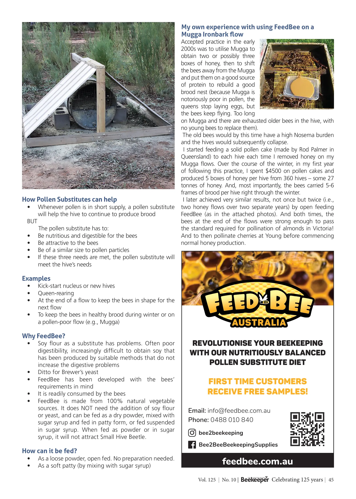

How Pollen Substitutes can help
•
Whenever pollen is in short supply, a pollen substitute
will help the hive to continue to produce brood
BUT
The pollen substitute has to:
•
Be nutritious and digestible for the bees
•
Be attractive to the bees
•
Be of a similar size to pollen particles
•
If these three needs are met, the pollen substitute will
meet the hive’s needs
Examples
•
Kick-start nucleus or new hives
•
Queen-rearing
•
At the end of a flow to keep the bees in shape for the
next flow
•
To keep the bees in healthy brood during winter or on
a pollen-poor flow (e.g., Mugga)
Why FeedBee?
•
Soy flour as a substitute has problems. Often poor
digestibility, increasingly difficult to obtain soy that
has been produced by suitable methods that do not
increase the digestive problems
•
Ditto for Brewer’s yeast
•
FeedBee has been developed with the bees’
requirements in mind
•
It is readily consumed by the bees
•
FeedBee is made from 100% natural vegetable
sources. It does NOT need the addition of soy flour
or yeast, and can be fed as a dry powder, mixed with
sugar syrup and fed in patty form, or fed suspended
in sugar syrup. When fed as powder or in sugar
syrup, it will not attract Small Hive Beetle.
How can it be fed?
•
As a loose powder, open fed. No preparation needed.
•
As a soft patty (by mixing with sugar syrup)
My own experience with using FeedBee on a
Mugga Ironbark flow
Accepted practice in the early
2000s was to utilise Mugga to
obtain two or possibly three
boxes of honey, then to shift
the bees away from the Mugga
and put them on a good source
of protein to rebuild a good
brood nest (because Mugga is
notoriously poor in pollen, the
queens stop laying eggs, but
the bees keep flying. Too long
on Mugga and there are exhausted older bees in the hive, with
no young bees to replace them).
The old bees would by this time have a high Nosema burden
and the hives would subsequently collapse.
I started feeding a solid pollen cake (made by Rod Palmer in
Queensland) to each hive each time I removed honey on my
Mugga flows. Over the course of the winter, in my first year
of following this practice, I spent $4500 on pollen cakes and
produced 5 boxes of honey per hive from 360 hives – some 27
tonnes of honey. And, most importantly, the bees carried 5-6
frames of brood per hive right through the winter.
I later achieved very similar results, not once but twice (i.e.,
two honey flows over two separate years) by open feeding
FeedBee (as in the attached photos). And both times, the
bees at the end of the flows were strong enough to pass
the standard required for pollination of almonds in Victoria!
And to then pollinate cherries at Young before commencing
normal honey production.
Vol. 125 | No. 10 |
Celebrating 125 years | 45